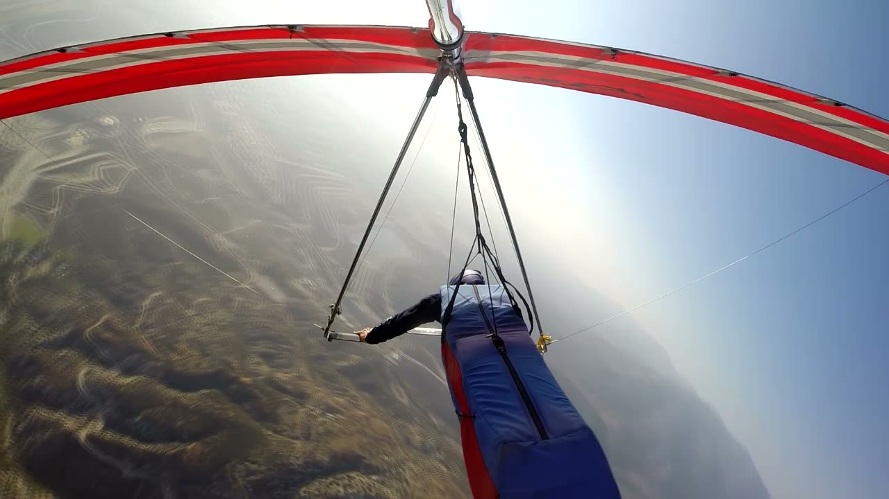
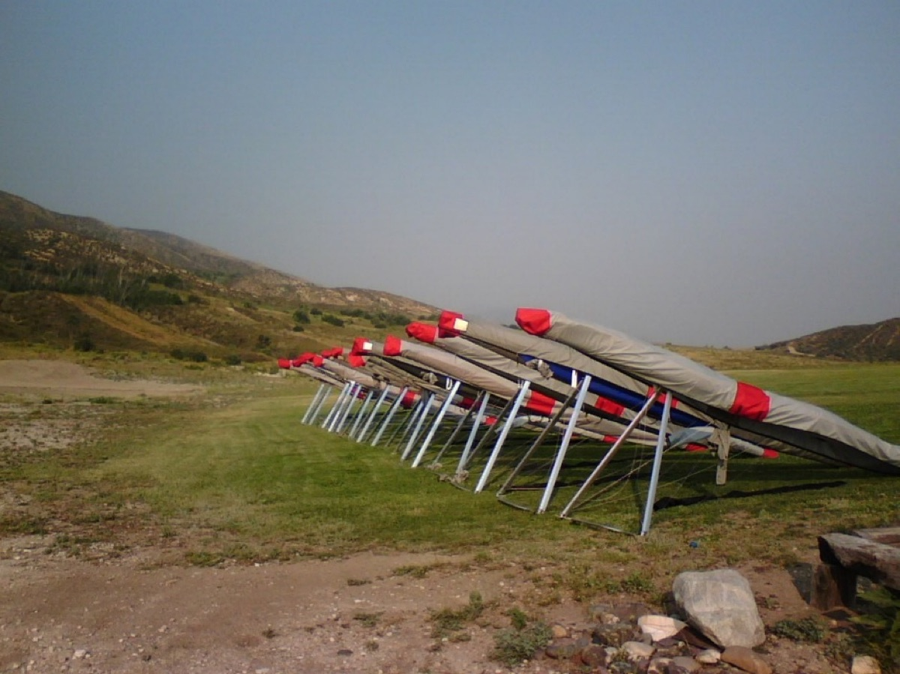

About Mike Meier
In brief
Mike Meier was a developmental, experimental and production test pilot of hang gliders for 45 years, flying the gliders Wills Wing designs and builds. He joined the Society of Experimental Test Pilots in 1994 and was made a Fellow in 2026.
Draft, Steve's, from the Gulfstream talk and Mike's emails. SETP Fellows induction photos to come.
Test flying #
In 45 years Mike flew experimental, developmental and production tests on Wills Wing's hang gliders: flow separation studies, maximum roll rate tests, spin testing, and the final quality-control flight on gliders coming off the line.




Photos: from Mike's flight-test video and slides for the 2015 talk.
SETP #
Below: from the 2018 Gulfstream talk, not in the paper; the years of membership and fellowship from Mike's email of October 23, 2026.
Mike first got involved with SETP in 1992, co-presenting a paper with Mark Stucky at the national symposium on applying classical flight test techniques to a modern high-performance hang glider. He applied for membership afterwards, on the strength of his experimental test work in hang gliders, and SETP accepted him as a member in 1994. He was made an Associate Fellow in 2018 and a Fellow in 2026.
By accepting my membership, the Society had, in effect, called my bluff. … And I had nothing. … Luckily, within about a year of coming to this realization, I had the good fortune to nearly kill myself while landing a hang glider.
To come: SETP Fellows induction photos, with SETP's permission.
Where the paper has been presented #
| Date | Venue |
|---|---|
| March 27, 2015 | SETP West Coast Section Symposium, San Diego |
| May 2, 2015 | Wills Wing CSS demos |
| May 5, 2015 | Flight Test Safety Workshop, Scottsdale |
| May 16, 2015 | Kitty Hawk Kites Spectacular |
| September 24, 2015 | SETP 59th Annual Symposium, Anaheim |
| March 11, 2016 | USHPA Board of Directors |
| April 15, 2016 | Wills Wing Wallaby |
| May 13, 2016 | Virgin Galactic |
| June 25, 2016 | Sylmar Hang Gliding |
| July 3, 2016 | Lookout Mountain |
| July 18, 2016 | Scaled Composites |
| July 28, 2016 | EAA AirVenture |
| September 1, 2016 | Colorado Fly Week |
| January 16, 2018 | Gulfstream Aerospace |
| November 3, 2018 | Pilot Forum, Sunnyvale |
Coming up: December 11, 2026, the National Test Pilot School, Mojave. Speaking.
Mike also discussed the paper on the Flight Test Safety Committee podcast, episode 54, "Go or No Go" (May 2024), with Art Tomassetti.
Contact #
For Mike: should the site show an email address for briefing requests and corrections?
Text CC BY-SA 4.0.